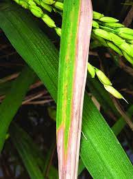

Blast symptoms appear on leaves as elliptical spots with light-colored centers and reddish edges.
Blast symptoms appear on leaves as elliptical spots with light-colored centers and reddish edges.

The most serious damage from rice blast occurs when the disease attacks the nodes just below the head, often causing the stem to break.